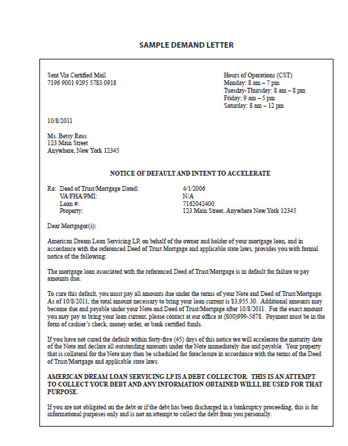

The timing of when you will receive a "Demand Letter" depends on the language in your Mortgage, but typically this will occur when you are 45 to 60 days behind on payments. Although the Bank is threatening to begin a foreclosure proceeding if you do not pay and may even say that you are in foreclosure when you contact them, at this point they have not actually filed any documents with the Court.
It is important to note that you may receive a Demand Letter, even if you have contacted the Bank and have begun to work with them in trying to work out a plan to get current. You may have sent lots of documents to the Bank, which they are actively reviewing. Regardless of these efforts, you still may receive a Demand Letter. With many large banks, the Demand Letter is automatically generated when you fall behind by a certain amount of time on payments. Therefore, even if you are being reviewed for workout solutions, you still will receive the Demand Letter. It does not mean that the Bank has stopped reviewing your documents. Therefore, if the Bank has asked you for more documents, send them in - do not assume that process has ended.
An example of a Demand Letter is on page 9.
